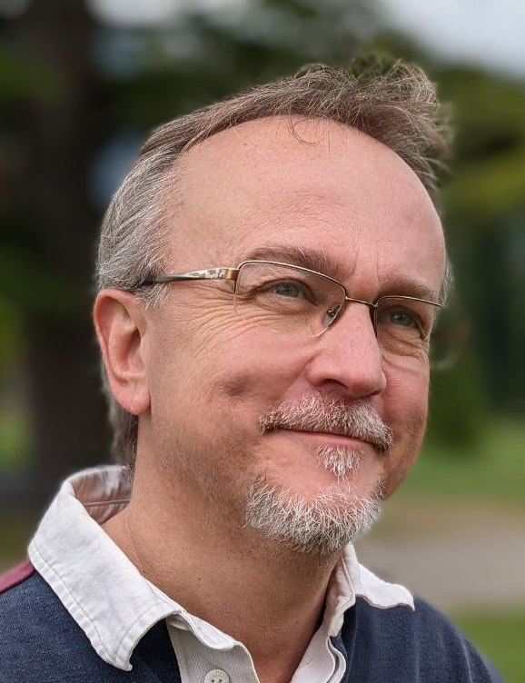

Keynote Speech 1
Empowering AI to Drive the Next Era of Intelligent Industry
Speaker: Tei-Wei Kuo , Delta Electronics & National Taiwan University
Abstract:
As the world undergoes a paradigm shift from the digital era to the age of intelligent systems, Artificial Intelligence is evolving from tools in natural language processing into a fundamental driver of innovation. Empowering AI at scale requires a robust foundation spanning energy infrastructure, advanced computing, edge intelligence, and domain expertise — from the power grid that fuels AI systems to the chips that enable intelligent decision-making. This keynote explores how these advances are transforming sustainable energy systems, intelligent automation, and Edge AI, highlighting the technologies and opportunities shaping the next era of intelligent industry.

Bio:
Dr. Kuo received his B.S.E. and Ph.D. degrees in Computer Science from National Taiwan University and University of Texas at Austin in 1986 and 1994, respectively. He is now Chief Technology Officer of Delta Electronics, where Delta Electronics is a global leader in power and thermal solutions with annual revenue over USD 17 billions in 2025, ranged from power electronics to automation and ICT infrastructure. Before he joined Delta Electronics, he was a Distinguished Professor of Department of Computer Science and Information Engineering of National Taiwan University for more than 25 years, where he was an Interim President of National Taiwan University (2017.10-2019.01). Prof. Kuo was Lee Shau Kee Chair Professor of Information Engineering, Advisor to President (Information Technology), and Dean of College of Engineering, City University of Hong Kong (2019.08-2022.07). His research interest includes flash-memory storage systems, non-volatile memory systems, and embedded systems.
Dr. Kuo is Fellow of ACM, IEEE, and US National Academy of Inventors and is Chair of ACM SIGAPP (since 2023). Prof. Kuo received numerous awards and recognition, including Academic Award of Taiwan Ministry of Education, Humboldt Research Award (2021) from Alexander von Humboldt Foundation (Germany), Distinguished Research Award of Taiwan National Science and Technology Council, Outstanding Technical Achievement and Leadership Award (2017) from IEEE Technical Committee on Real-Time Systems, and Distinguished Leadership Award (2017) from IEEE Technical Committee on Cyber-Physical Systems. Prof. Kuo is the founding Editor-in-Chief of ACM Transactions on Cyber-Physical Systems (2015-2021) and a program committee member of many top conferences. He was General Chair of ESWEEK (2025). Prof. Kuo has over 350 technical papers published in international journals and conferences and received many best paper awards, including Best Paper Award from ACM/IEEE CODES 2019, 2022, 2024.
Keynote Speech 2
A Tutorial Introduction to Deep Brain Stimulation
Speaker: Samarjit Chakraborty, UNC Chapel Hill & TU Munich Institute for Advanced Study
Abstract:
Deep Brain Stimulation (DBS) has been shown to be an effective treatment for Parkinson’s Disease and is starting to be used to treat essential tremor, epilepsy, obsessive compulsive disorder and certain types of depression. DBS provides electrical stimuli to specific regions of the patient’s brain through surgically implanted electrodes that are wired to a pulse generator, also implanted inside the patient. While almost 10,000 DBS surgeries are already performed in the U.S. alone every year, research is actively being done to improve this technology. These include determining better electrode configurations and optimizing stimulation parameters by adjusting the pulse’s shape, amplitude, and frequency. Such parameters can either remain static and be manually adjusted by a neurologist, or use closed-loop feedback control that monitor neural data-based biomarkers to adjust the stimulation. Such adaptive approaches can not only lead to better patient outcomes as the condition of the patient evolves, but also reduce undesirable side effects and prolong the device’s battery life. This talk will provide a tutorial introduction to DBS, covering its history, clinical foundations, and emerging adaptive strategies. We will see that DBS is a compelling cyber-physical systems problem, involving questions in optimal control, reinforcement learning, formal verification, and resource & power-aware embedded systems design.

Bio:
Samarjit Chakraborty is Kenan Distinguished Professor of Computer Science and an adjunct professor of Mathematics at the University of North Carolina at Chapel Hill. Before joining UNC, he was Professor of Electrical Engineering at the Technical University of Munich, where he held the Chair of Real-Time Computer Systems, and earlier served on the faculty of the National University of Singapore. He received his PhD from ETH Zurich. His research spans embedded and cyber-physical systems, sustainable computing, and sensor-networked information processing. His work has received several best paper awards and other recognitions. He is an IEEE Fellow, an ACM Distinguished Speaker, a Fellow of the TUM Institute of Advanced Study, and is currently the elected chair of ACM SIGBED, the ACM’s Special Interest Group on Embedded Systems.